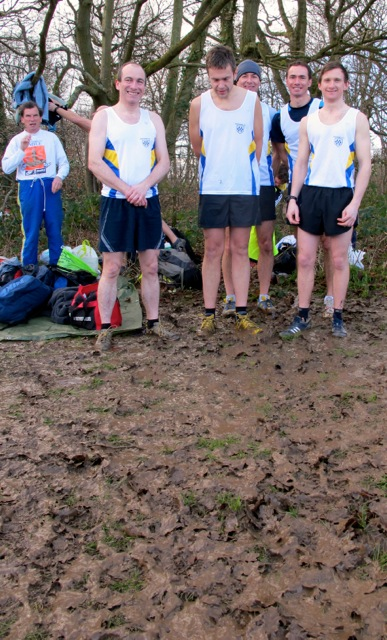
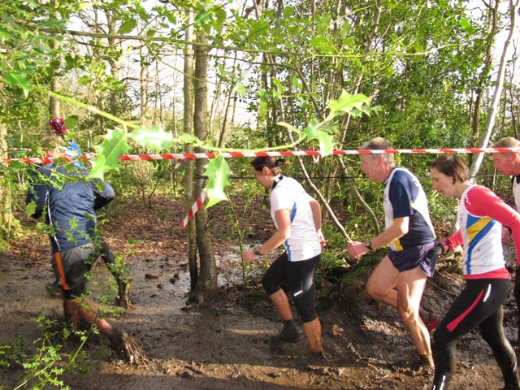

Kent Fitness League Feb 2014 – Sevenoaks AC still in the lead
Thirty-four Sevenoaks AC runners made the journey to Rough Common near Canterbury on Sunday Feb 2nd for the 6th race in the Kent Fitness League series.

Although the weather was dry and sunny, Rough Common truly lived up to its name. After several weeks of non-stop rain, the mud was ankle deep in the start field but knee deep on the trails through the woods. Many runners fell and returned wet and muddy from head to toe.
Sevenoaks AC started well. Allan Lee lead the race for the first half but unfortunately was forced to retire with a calf injury ….. and had to walk 2 miles through the mud to get back to the finish!
The race was won by Chris Wyles from New Eltham Joggers who completed the tough 8.5 km course in 30.52 mins. This was Chris’ 4th win in the series.
Allan’s Lee’s brother David was the fastest Sevenoaks finisher, coming in 7th, with David Ives close behind in 13th.
50-year-old Chris Desmond had another great run to come 18th, the fastest over-50 runner.
SAC’s close rivals, Dartford Harriers fielded a strong team to win the men’s race.
The SAC men’s team of David Lee, David Ives, Chris Desmond, plus Andrew Mead (33rd), Ben Bridges (35th), Lee Lintern (44th), and Joe Parsons (52nd), came in 2nd position.
In the women’s race, Holly Page from Dartford Harriers ran well to win in 34.38mins, well clear of the rest of the field.
Sevenoaks AC’s fastest woman was Cath Linney in 11th place, closely followed by Pauline Dalton in 14th, with Nicky Thompson in 31st place.
The SAC women’s team was missing this year’s star runner Heather Fitzmaurice through illness, and came 5th behind very strong teams from Canterbury and Dartford.
With just one race to go Sevenoaks are still winning the series.

In the men’s series Sevenoaks are lying second, just one point behind Dartford., and in the women’s series Sevenoaks are third behind Canterbury and Dartford. Combined, Sevenoaks is still in the lead.
However the championship will be decided on each team’s best 6 races from the 7 – each team being allowed to ditch their worst race. Sevenoaks have been remarkably consistent all season, never coming lower than 3rd place. Dartford, on the other hand, came 6th in the first race on the series in Knole in October. So on the basis of the best 5 races so far, Sevenoaks and Dartford are exactly even.
It all hinges on the seventh, and final race in Meopham on Sunday Feb 16th.
With Allan Lee injured, Sevenoaks will need Mike Fanning to recover from his tendon injury, Heather Fitzmaurice to recover from illness, and every member of the team to compete and run well.
If we beat Dartford on Feb 16th we will win the championship. If Dartford beat us, they will win the championship. It couldn’t be closer.
[Report by Jim Knight, Sevenoaks AC Feb 2014.]
The full SAC results were as follows:
Ov Pos | Lg Pos | Runner | Age | Time | Club | Rating |
|---|---|---|---|---|---|---|
| 7 | 7 | David Lee | 35 | 32:10 | Sevenoaks AC | 97.49 |
| 13 | 13 | David Ives | 38 | 32:49 | Sevenoaks AC | 94.98 |
| 18 | 18 | Chris Desmond | 50 | 33:39 | Sevenoaks AC | 92.89 |
| 33 | 33 | Andrew Mead | 45 | 34:26 | Sevenoaks AC | 86.61 |
| 35 | 35 | Ben Bridges | 34 | 34:31 | Sevenoaks AC | 85.77 |
| 44 | 42 | Lee Lintern | 33 | 35:00 | Sevenoaks AC | 82.85 |
| 52 | 49 | Joe Parsons | 23 | 35:31 | Sevenoaks AC | 79.92 |
| 53 | 50 | Andrew Linney | 46 | 35:33 | Sevenoaks AC | 79.50 |
| 54 | 51 | Keith Brown | 42 | 35:34 | Sevenoaks AC | 79.08 |
| 55 | 52 | Andy Ashlee | 44 | 35:37 | Sevenoaks AC | 78.66 |
| 56 | 53 | James Wright | 45 | 35:38 | Sevenoaks AC | 78.24 |
| 74 | 69 | Adam Lesley | 42 | 36:59 | Sevenoaks AC | 71.55 |
| 85 | 78 | John Stevens | 52 | 37:26 | Sevenoaks AC | 67.78 |
| 86 | 79 | Daniel Witt | 39 | 37:27 | Sevenoaks AC | 67.36 |
| 94 | 86 | James Baker | 49 | 38:02 | Sevenoaks AC | 64.44 |
| 120 | 108 | Anthony Waldron | 46 | 38:58 | Sevenoaks AC | 55.23 |
| 142 | 129 | Andy Evans | 43 | 39:52 | Sevenoaks AC | 46.44 |
| 143 | 11 | Cath Linney | 44 | 39:53 | Sevenoaks AC | 89.13 |
| 147 | 132 | Stuart Thompson | 39 | 40:00 | Sevenoaks AC | 45.19 |
| 152 | 14 | Pauline Dalton | 49 | 40:13 | Sevenoaks AC | 85.87 |
| 168 | 147 | Geoff Kitchener | 64 | 41:11 | Sevenoaks AC | 38.91 |
| 177 | 155 | Andy Nicoll | 33 | 41:56 | Sevenoaks AC | 35.56 |
| 180 | 158 | Sam Bennett | 40 | 42:02 | Sevenoaks AC | 34.31 |
| 190 | 166 | Duncan Cochrane | 56 | 42:34 | Sevenoaks AC | 30.96 |
| 213 | 178 | Martin White | 46 | 43:54 | Sevenoaks AC | 25.94 |
| 216 | 31 | Nicki Thompson | 37 | 44:03 | Sevenoaks AC | 67.39 |
| 217 | 179 | Uri Margot | 37 | 44:07 | Sevenoaks AC | 25.52 |
| 220 | 33 | Happy Fisher | 37 | 44:17 | Sevenoaks AC | 65.22 |
| 233 | 191 | Maurice Marchant | 65 | 44:43 | Sevenoaks AC | 20.50 |
| 253 | 202 | James Fitzmaurice | 71 | 45:45 | Sevenoaks AC | 15.90 |
| 264 | 52 | Silvia Forcat | 37 | 46:35 | Sevenoaks AC | 44.57 |
| 280 | 215 | Hugh Shewell | 24 | 48:28 | Sevenoaks AC | 10.46 |
| 282 | 59 | Sarah Shewell | 54 | 48:44 | Sevenoaks AC | 36.96 |
| 294 | 220 | Fay Margot | 35 | 49:46 | Sevenoaks AC | 8.37 |
The full results are here.